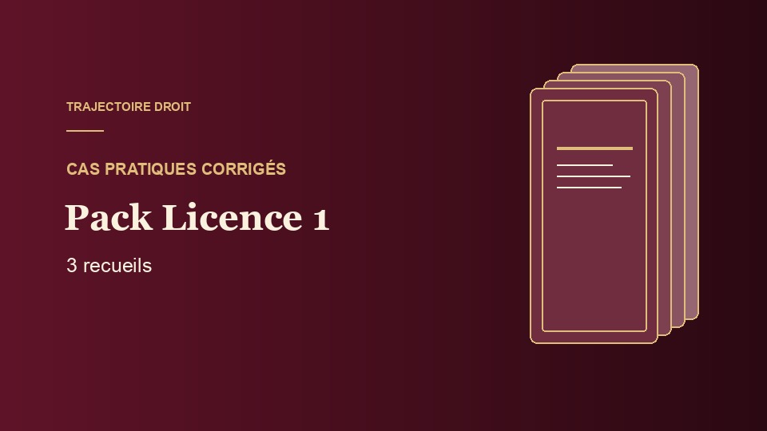
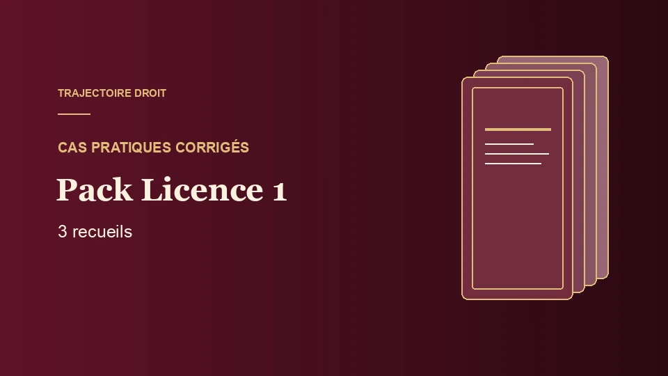
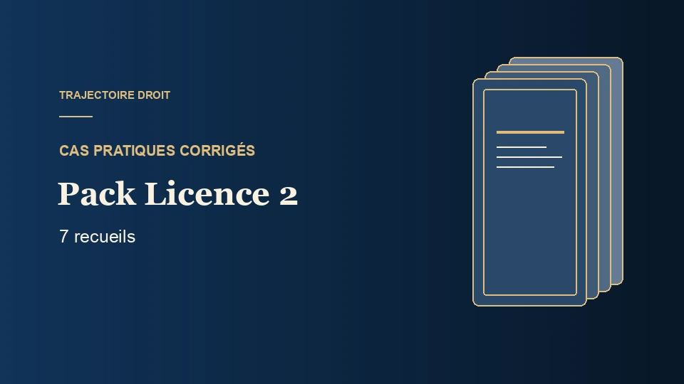

Pack annuel
Commentaires d'arrêt L1
Le pack réunit le droit des personnes et le droit de la famille, avec vingt commentaires entièrement rédigés.
39,98 €22 €-45 %
Un cas pratique en droit consiste à résoudre une situation concrète en cinq étapes. Qualifier un fait, c'est lui donner un nom juridique. Il faut d'abord qualifier les faits utiles. On pose ensuite le problème de droit sous forme de question abstraite, sans reprendre les faits. On énonce alors la règle de droit applicable, avec ses articles et sa jurisprudence. Cette étape s'appelle la majeure du syllogisme. Enfin, on applique cette règle aux faits, c'est la mineure, puis on conclut sur la solution retenue.

Les cas pratiques corrigés, par année de licence
Chaque PDF corrige des cas pratiques et des sujets de partiel d'une matière, rédigés selon les étapes de cette page, de la qualification des faits jusqu'à la conclusion. Le pack de L1 réunit les quatre PDF de l'année, de l'introduction au droit jusqu'au droit pénal général.
Paiement sécurisé. Tes fichiers sont envoyés par email dès la confirmation.
Dans un cas pratique, l'étudiant se met à la place d'un juriste qui doit résoudre un problème concret, comme un avocat ou un juge le ferait avec le dossier d'un client. On part d'une situation et on cherche la règle qui s'y applique. On en tire ensuite la solution.
Tout repose sur le syllogisme juridique. C'est un raisonnement en trois temps. On pose d'abord une règle générale. On l'applique ensuite à la situation du sujet, puis on en déduit la solution.
La règle générale s'appelle la majeure. L'application aux faits s'appelle la mineure. Le résultat s'appelle la conclusion. Il faut répéter ce raisonnement pour chaque question du sujet, car un cas pratique en pose presque toujours plusieurs.
Avant de rédiger, il faut lire le sujet en entier et classer les problèmes à traiter. Pour chaque question, on repère aussi les textes et les arrêts qui s'appliquent. Grâce à cette préparation, le temps passé sur la copie sert ensuite à développer le raisonnement.
Il faut lire le sujet au moins trois fois, et chaque lecture a son propre rôle.
La première lecture donne une vue d'ensemble. Elle fait apparaître les grands thèmes du sujet, par exemple un divorce ou un accident de la route. La deuxième lecture sert à relever ce qui compte.
On repère qui sont les personnes, quel lien les unit et à quelle date chaque événement s'est produit. Ces informations peuvent s'annoter directement sur l'énoncé. Si les relations sont difficiles à suivre, un schéma court au brouillon aide à voir qui a fait quoi.
La troisième lecture sert à repérer les questions de droit une par une. Pour cela, on peut entourer les passages qui posent un problème et leur donner un numéro, avec quelques mots de repérage. Ces annotations restent donc sur l'énoncé. De plus, on repère les questions qui demandent de longs développements et celles qui se règlent en quelques lignes.
Ensuite, au brouillon, on prépare surtout l'ordre des problèmes et les titres utiles. On peut aussi y noter les références qu'on risque d'oublier. Ainsi, il reste assez de temps pour expliquer la règle et l'appliquer aux faits sur la copie. Le temps de préparation s'adapte au nombre de questions et à la durée de l'épreuve.
Une fois les questions posées, on cherche les réponses dans le code. Le régime, ce sont les règles qui s'appliquent quand les conditions d'un texte sont remplies. La plupart du temps, un article donne les conditions et le régime. On note cet article avec son numéro.
Quand le texte ne dit rien, la jurisprudence a en général réglé la question. On s'appuie alors sur les arrêts, en donnant leur juridiction et leur date. Ce travail de recherche fournit le contenu de la majeure. Le jour de l'examen, il prend une bonne partie du temps de l'épreuve.
Des majeures préparées à l'avance font donc gagner beaucoup de temps le jour de l'examen. Je les prépare toutes faites, et il reste seulement à les apprendre.
Il faut toujours suivre le même ordre, car chaque étape prépare la suivante. Cet enchaînement montre au correcteur que tu sais raisonner en droit.
Il faut résumer la situation en donnant à chaque fait son nom juridique. Si une personne casse une vitre, elle devient l'auteur d'un fait personnel, et la vitre cassée devient un dommage. De même, un garçon de treize ans devient un mineur. Avant de qualifier, il faut d'ailleurs savoir si l'affaire relève du droit civil ou du droit pénal. En effet, la réponse change la personne qui peut agir en justice et les preuves à apporter. C'est le cas d'un élève qui casse le téléphone d'un camarade. La victime peut demander au juge civil qu'on lui rembourse son téléphone. Mais si l'élève l'a cassé exprès, il peut aussi être poursuivi devant un juge pénal. En droit pénal, qualifier consiste à dire à quelle catégorie l'infraction appartient. On s'appuie alors sur la distinction entre contravention, délit et crime. On reprend seulement les faits utiles à la solution. Si le sujet dit « Monsieur X et Madame Y, qui filent le parfait amour, se marient en 2000, puis après trois ans d'essais ont une fille, Aurore », il suffit d'écrire qu'ils se marient en 2000 et ont une fille en 2003. Le reste ne change rien au raisonnement.
Dans un cas pratique, la question de droit doit être générale et autonome. Une question générale remplace les prénoms par les qualités juridiques utiles, comme un parent et son enfant. Une question autonome nomme la demande ou l'acte qui pose problème. Elle se comprend donc sans relire les faits.
La question « Le parent peut-il s'opposer à cette demande ? » laisse le lecteur chercher la demande dans les faits. « Un parent peut-il s'opposer à la demande d'émancipation de son enfant ? » se comprend toute seule. Pour le vérifier, on peut relire sa question en cachant le rappel des faits. La page sur la question de droit compare plusieurs formulations d'un même cas pratique.
Quand l'énoncé pose plusieurs questions, il faut les traiter une par une, parce que le barème attribue des points à chacune. Une question oubliée fait donc perdre tous les points qui vont avec. Cette méthode est appliquée en entier sur un exemple corrigé à plusieurs questions en droit des biens.
La majeure pose la règle de droit, avec les articles et les arrêts sur lesquels elle repose. Chaque texte et chaque arrêt se présente l'un après l'autre, avec ce qu'il apporte à la règle. Surtout, il faut découper la règle condition par condition. En effet, la mineure vérifie ensuite chacune de ces conditions avec les faits. Pour la responsabilité des parents, la majeure sépare ainsi la minorité de l'enfant, le fait de l'enfant et l'exercice de l'autorité parentale. Les majeures préparées à l'avance contiennent ce travail déjà fait, et il reste seulement à les apprendre.
Cette partie commence par « en l'espèce », autrement dit « dans cette affaire ». On y applique la règle aux faits, condition par condition, pour voir si chacune est remplie. C'est la partie la plus développée de la copie, plus longue que la majeure. Une majeure plus longue que la mineure montre au contraire que l'étudiant récite son cours au lieu de l'appliquer. La copie perd alors des points. Quand l'énoncé ne dit rien sur un point, il faut envisager les hypothèses. Le préjudice d'agrément, c'est la perte d'un loisir. Imaginons que la blessure empêche l'enfant de faire du sport. Il subit alors aussi un préjudice d'agrément.
Cette dernière partie commence par « en conclusion ». Elle répond directement à la question posée. La réponse doit être assumée et découler du raisonnement. Il faut donc éviter les formules prudentes comme « pourrait éventuellement être retenue ». On termine ainsi chaque question, puis on passe à la suivante avec un nouveau syllogisme.
Pour t'entraîner sur tes propres sujets avec un retour personnalisé, il y a mes cours particuliers. Pour apprendre d'abord la matière, les fiches de droit des contrats L2 reprennent chaque règle avec ses conditions, prêtes à servir de majeure. La méthode reste la même en droit pénal L2 et en droit des obligations L2, deux matières où le cas pratique tombe très souvent à l'examen. Pour préparer ses majeures à l'avance, on peut lire l'article sur la révision du droit. Il présente des méthodes de révision testées par des chercheurs qui étudient la mémoire. L'article sur la fiche de révision montre aussi comment faire une fiche utile le jour de l'examen.
Le raisonnement se déroule ici en entier, sur un cas de responsabilité des parents du fait de leur enfant.
Un enfant mineur a causé un dommage corporel à un autre enfant en jouant. Mathieu a fait tomber Jules, qui s'est cassé le bras. Il existe donc un fait de l'enfant qui a causé un dommage à un autre enfant.
La victime d'un dommage causé par un enfant mineur peut-elle en obtenir réparation auprès des parents de cet enfant ?
L'article 1242 alinéa 4 du Code civil rend les parents responsables du dommage causé par leur enfant mineur. Trois conditions doivent être réunies.
D'abord, l'enfant doit être mineur.
Ensuite, il faut un fait de l'enfant à l'origine du dommage. Sur ce point, l'arrêt Levert (2e chambre civile, 10 mai 2001), confirmé par l'Assemblée plénière le 13 décembre 2002, juge qu'il suffit que le fait de l'enfant ait causé le dommage, sans que la victime ait à prouver une faute de l'enfant.
Enfin, il faut que les parents exercent l'autorité parentale. Sur ce point, le droit a changé. Pendant longtemps, on exigeait en plus que l'enfant habite avec ses parents, ce qu'on appelait la condition de cohabitation. L'Assemblée plénière l'a abandonnée dans un arrêt du 28 juin 2024. Ensuite, la loi du 23 juin 2025 a inscrit cet abandon directement dans le texte de l'article. Cette nouvelle rédaction s'applique depuis le 25 juin 2025. Aujourd'hui, les parents qui exercent ensemble l'autorité parentale doivent réparer le dommage causé par leur enfant, même si l'enfant ne vit pas avec eux, par exemple quand ils sont séparés. Leur responsabilité est écartée seulement par une décision de placement de l'enfant, prise par l'administration ou par un juge. La loi précise aussi que les deux parents sont solidairement responsables. Ainsi, la victime peut demander toute l'indemnisation à un seul des deux parents. Avec 10 000 euros de dommages, la victime peut donc réclamer toute la somme au père seul. Ensuite, le père pourra demander à la mère de lui rembourser sa part. Cette règle protège la victime, car elle se fait payer en entier par un seul parent.
Cette responsabilité est de plein droit depuis l'arrêt Bertrand (2e chambre civile, 19 février 1997). Les parents sont donc responsables même s'ils n'ont commis aucune faute. Les parents s'en libèrent seulement en prouvant la force majeure ou la faute de la victime.
En l'espèce, on reprend chaque condition l'une après l'autre.
Première condition, la minorité. Mathieu a six ans, il est donc bien mineur. Cette condition est remplie.
Deuxième condition, un fait de l'enfant à l'origine du dommage. Mathieu a fait tomber Jules, et cette chute a cassé le bras de Jules. Le lien entre le geste de Mathieu et le bras cassé est donc direct. Il faut toutefois noter que Mathieu a agi par inadvertance, sans intention de blesser. Cela ne change rien, car depuis l'arrêt Levert il suffit que l'enfant ait causé le dommage. On n'a donc pas à chercher une faute de l'enfant. La condition est donc remplie.
Troisième condition, l'exercice de l'autorité parentale. Les parents de Mathieu exercent sur lui l'autorité parentale, et rien dans l'énoncé ne mentionne une décision de placement qui les en aurait privés. Depuis l'arrêt du 28 juin 2024, cela suffit pour que les parents soient responsables. On n'a même plus à vérifier si Mathieu habite avec eux.
Ensuite, il reste à voir si les parents peuvent s'exonérer, autrement dit échapper à leur responsabilité. Comme cette responsabilité est de plein droit, ils y échappent seulement en prouvant la force majeure ou une faute de la victime. Or l'énoncé ne révèle ni l'une ni l'autre. Le jeu entre deux enfants ne constitue ni un événement imprévisible et irrésistible, ni une faute de Jules.
En conclusion, les parents de Mathieu sont solidairement responsables de plein droit du dommage causé à Jules, sur le fondement de l'article 1242 alinéa 4 du Code civil. Les parents de Jules obtiendront réparation du bras cassé.
Dans le pack, chaque matière a son PDF de commentaires d’arrêt corrigés. Tu peux donc ouvrir directement celui que tu prépares. Selon le pack, tu économises entre 43 et 45 % sur le total des PDF achetés à l’unité.
Tu retrouves chaque décision avec son introduction, son plan et son développement entièrement rédigés.
Le pack réunit le droit des personnes et le droit de la famille, avec vingt commentaires entièrement rédigés.

Le pack réunit tes matières de L2, dont les deux semestres de droit administratif. Tu y trouves aussi le droit pénal et tout le droit civil de deuxième année, des contrats aux biens.

Le pack réunit les contrats spéciaux et le droit des sociétés, ainsi que le droit du travail.
Chaque corrigé commence par qualifier les faits, c'est-à-dire leur donner leur nom juridique. Il pose ensuite la règle de droit, puis l'applique aux faits avant de conclure.

Le pack couvre l'introduction au droit et le droit pénal général, ainsi que le droit des personnes et de la famille. Il contient quarante cas pratiques et douze sujets construits comme un partiel.

Le pack couvre les deux semestres de droit administratif, puis le droit pénal et tout le droit civil de deuxième année, des contrats aux biens. Il contient soixante cas pratiques et dix-huit sujets construits comme un partiel.

Le pack couvre le droit commercial sur les deux semestres, puis les autres matières de L3, des contrats spéciaux à la procédure pénale. Il contient soixante-cinq cas pratiques et vingt et un sujets construits comme un partiel.
L'étudiant qui commence à rédiger sans relire le sujet ni chercher les textes oublie souvent la moitié des questions.
Chaque fait doit d'abord recevoir son nom juridique. Ce nom indique en effet quelle règle appliquer. Il faut donc toujours commencer par la qualification.
Le correcteur veut voir la règle confrontée aux faits. Une réponse qui recopie le cours sans l'appliquer n'obtient presque aucun point.
L'essentiel de l'exercice se trouve dans la mineure. Une mineure trop courte montre donc que la règle a été à peine appliquée.
Le barème attribue des points à chaque question. Une question laissée de côté fait donc perdre une partie de la note.
Une conclusion floue laisse le problème de droit sans réponse. La conclusion doit donc donner une réponse claire, même après des hypothèses posées dans la mineure.
Voici deux erreurs classiques, relevées sur une vraie copie, puis corrigées phrase par phrase.
« Les parents sont responsables de plein droit du fait de leur enfant mineur dès lors que trois conditions sont réunies, la minorité, un fait de l'enfant à l'origine du dommage, et l'exercice de l'autorité parentale. Ils peuvent s'exonérer en prouvant la force majeure ou la faute de la victime. »
« En l'espèce, Mathieu a six ans, il est donc mineur. Son geste a directement causé la chute de Jules, dont le bras est cassé. Ses parents exercent sur lui l'autorité parentale et rien dans l'énoncé ne révèle une décision de placement. Aucune force majeure ni faute de la victime n'apparaît. Les trois conditions sont donc réunies. »
La première version recopie la règle sans l'appliquer aux faits. La seconde reprend chaque condition et la confronte aux faits de l'énoncé, une par une.
« On peut donc considérer que la responsabilité des parents pourrait éventuellement être retenue, sous réserve de l'appréciation souveraine des juges du fond. »
« Les parents de Mathieu sont solidairement responsables de plein droit du dommage causé à Jules, sur le fondement de l'article 1242 alinéa 4 du Code civil. »
Une conclusion floue laisse le problème de droit sans réponse. La seconde version donne une réponse claire et assumée, qui découle du raisonnement tenu dans la mineure.
Voici des cas pratiques entièrement rédigés, au format d'une vraie copie, pour voir la méthode appliquée pas à pas.
Pour t'entraîner sur toute ta matière, la compilation de cas pratiques corrigés de ton semestre coûte 19,99 €. Chaque corrigé y suit les cinq étapes de cette page, de la qualification des faits jusqu'à la conclusion.
Choisir mes cas pratiques corrigés · 19,99 €Tu prépares un galop d'essai ? Voici comment le réussir →
Voir tous les cas pratiques corrigés, classés par matière → · Toute la méthodologie juridique →
Dans les fiches complètes, chaque règle est écrite avec ses conditions, et tu peux la reprendre telle quelle dans ta majeure. En cours particulier, je corrige tes cas pratiques un par un avec toi.
Voir les fiches complètesReçois mon guide « Réviser le droit sans s'épuiser », gratuitement.
Désinscription en 1 clic · Aucune carte bancaire